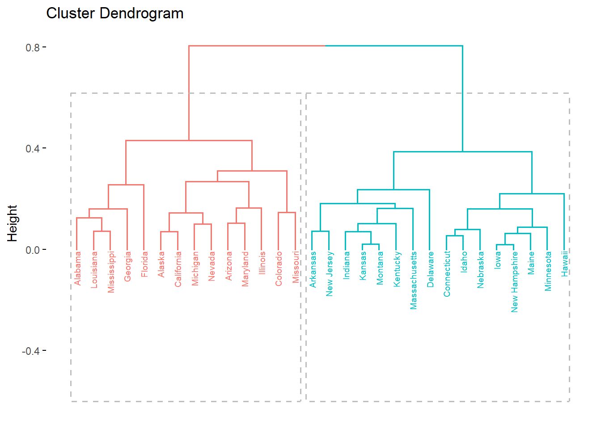

library(pacman)
p_load(rio, cluster, factoextra, tidyverse, ggrepel, scatterplot3d)
library(tidyclust)
library(tidymodels)9 Clustering jerárquico
9.1 Ejemplo introductorio

9.1.1 Base de datos
Vamos a explorar un ejemplo con una data pequeña:
Caso <- c("A", "B", "C", "D", "E", "F")
Var1 <- c(1, 2, 4, 6, 1, 4)
Var2 <- c(2, 5, 1, 4, 3, 6)
data<- data.frame(Caso, Var1, Var2)
row.names(data) <- data$Caso
data$Caso<- NULL9.1.2 Exploración y Estandarización
Antes de realizar un análisis de clustering, es crucial estandarizar los datos porque las variables pueden tener diferentes escalas y unidades de medida. Si no se estandarizan, las variables con valores más grandes pueden dominar las distancias calculadas, sesgando los resultados del clustering.
La estandarización coloca todas las variables en una escala común, normalmente con media cero y desviación estándar uno, asegurando que cada variable contribuya de manera equitativa al cálculo de distancias y permitiendo obtener grupos que reflejen patrones verdaderos en los datos.
#data.est <- as.data.frame(scale(data))
#str(data)9.1.3 Medidas de distancia

La distancia entre puntos de datos cuantifica cuán cercanos o lejanos están unos de otros en el espacio multidimensional, influyendo directamente en la formación de los clusters. La matriz de distancias, que recopila todas las distancias entre cada par de puntos, sirve como la base para algoritmos de clustering como el de k-means o jerárquico, guiando el proceso de agrupamiento al identificar conjuntos de puntos que son más cercanos entre sí.
9.1.3.1 Tipos de distancia
Existen varios métodos de distancia utilizados en análisis de datos, siendo la distancia Euclídea la más común debido a su simplicidad y a que proporciona una medida directa de la separación entre puntos en un espacio multidimensional, ideal para datos continuos y normalmente distribuidos.
Sin embargo, en escenarios donde los datos son mixtos (es decir, contienen variables continuas, categóricas y binarias), es más apropiado utilizar otras métricas como la distancia de Gower, que permite calcular una similitud generalizada combinando diferentes tipos de variables. Este enfoque es crucial cuando se trabaja con conjuntos de datos heterogéneos, como encuestas que contienen respuestas numéricas y categóricas, asegurando así que todas las variables sean consideradas adecuadamente en el análisis.
9.1.3.2 Calculando la distancia
Las funciones usadas con mayor frecuencia para calcular las distancias son: dist(), get_dist() y daisy(), de los paquetes stats, factoextra y cluster:
Distancia euclidiana con dist()
dist.eucl <- dist(data, method = "euclidean")
round(as.matrix(dist.eucl), 1) A B C D E F
A 0.0 3.2 3.2 5.4 1.0 5.0
B 3.2 0.0 4.5 4.1 2.2 2.2
C 3.2 4.5 0.0 3.6 3.6 5.0
D 5.4 4.1 3.6 0.0 5.1 2.8
E 1.0 2.2 3.6 5.1 0.0 4.2
F 5.0 2.2 5.0 2.8 4.2 0.0Otras distancias: “maximum”, “manhattan”, “minkowski”
Distancia euclidiana con daisy()
library(cluster)
dist.eucl2 <- daisy(data, metric= "euclidean")
round(as.matrix(dist.eucl2), 1) A B C D E F
A 0.0 3.2 3.2 5.4 1.0 5.0
B 3.2 0.0 4.5 4.1 2.2 2.2
C 3.2 4.5 0.0 3.6 3.6 5.0
D 5.4 4.1 3.6 0.0 5.1 2.8
E 1.0 2.2 3.6 5.1 0.0 4.2
F 5.0 2.2 5.0 2.8 4.2 0.0Otras distancias: “gower”, “manhattan”.
Distancia euclidiana con get_dist()
library(factoextra)
res.dist <- get_dist(data,
stand = TRUE, # En este caso estamos estandarizando al mismo tiempo!
method = "euclidean")
round(as.matrix(res.dist), 1) A B C D E F
A 0.0 1.7 1.6 2.7 0.5 2.6
B 1.7 0.0 2.4 2.1 1.2 1.1
C 1.6 2.4 0.0 1.9 1.8 2.7
D 2.7 2.1 1.9 0.0 2.6 1.5
E 0.5 1.2 1.8 2.6 0.0 2.2
F 2.6 1.1 2.7 1.5 2.2 0.0Otras distancias: “pearson”, “kendall”, “spearman”
9.1.3.3 Visualizando
Ver un gráfico de matriz de distancias como un heatmap en lugar de una matriz numérica es útil porque proporciona una visualización más intuitiva y rápida de las relaciones de similitud o disimilitud entre las observaciones. A diferencia de una matriz numérica, que puede ser difícil de interpretar a simple vista, el heatmap utiliza colores para representar distancias, facilitando la identificación de patrones, clusters, o grupos de datos que son similares entre sí.
Podemos visualizar la matriz de distancia con fviz_dist():
fviz_dist(res.dist) 
fviz_dist(res.dist,
gradient = list(low = "white",
high = "#FC4E07")) Interpretación del segundo heatmap:
Colores: La intensidad del color representa la magnitud de la distancia. En este gráfico, los colores más oscuros (rojo intenso) indican distancias mayores, mientras que los colores más claros (blanco o tonos claros) representan distancias menores.
Valores: Los valores en la barra de color a la derecha (de 0 a 2) indican la escala de la distancia. Por ejemplo, una celda de color blanco tiene un valor cercano a 0, lo que sugiere que las observaciones comparadas son muy similares o cercanas entre sí. Una celda de color más oscuro indica una mayor diferencia o distancia entre las observaciones.
9.1.4 Ejemplo con cluster jerárquico aglomerativo
Aplicamos el algoritmo que vimos en clase sobre las distancias calculadas anteriormente.
aglomerativo = hcut(dist.eucl, # MATRÍZ DE DISTANCIAS!!!
k = 3, # Extrae tres cluster
hc_func='agnes', # Método aglomerativo
hc_method = "single") # Método de agrup. sea singleNO SE CALCULA SOBRE LAS VARIABLES ORIGINALES.
Para obtener un número específico de clústeres a partir del dendrograma, debes “cortar” el dendrograma en un punto donde se divida en el número deseado de clústeres. El parámetro k le dice a la función cuántos clústeres deseas obtener después de hacer este corte.
hc_func=‘agnes’ especifica el uso del método de clustering jerárquico aglomerativo (AGNES).
hc_method = “single” indica el uso del método de enlace simple (single linkage) para calcular las distancias entre clústeres.
9.1.5 Visualización del clúster
Un dendrograma es una representación gráfica que muestra cómo se agrupan las observaciones (o datos) en un análisis de clustering jerárquico. Es una herramienta visual que ayuda a entender la estructura de los datos y cómo se forman los grupos o clusters de manera jerárquica.
En un dendrograma, las observaciones individuales se fusionan en clusters más grandes a medida que nos movemos hacia arriba en el gráfico, con la altura en el eje vertical representando la distancia o disimilitud entre los clusters.
plot(aglomerativo)Eje vertical (Height): La altura indica la disimilitud o distancia entre los clusters que se fusionan. Cuanto mayor sea la altura de la unión, más diferentes son los clusters.
Fusiones de Clusters:
Las observaciones A y E se fusionan primero a una altura baja, lo que indica que son muy similares entre sí.
Luego, el cluster formado por A y E se une con el siguiente cluster (B) a una altura mayor, indicando una similitud moderada.
A continuación, la observación F se une al cluster previo de (A, E, B).
Más arriba, las observaciones D y F se combinan, y finalmente se une la observación C al cluster completo a una altura relativamente alta, lo que sugiere que C es la más disímil respecto a las demás observaciones.
Por otro lado, también el gráfico brinda el coeficiente Agregativo (Agglomerative Coefficient = 0.34). Este coeficiente es una medida de la estructura del clustering. Un valor cercano a 1 indica que los clusters son compactos y bien definidos, mientras que un valor cercano a 0 indica que los clusters son menos claros. En este caso, un valor de 0.34 sugiere que la estructura del clustering no es muy fuerte o bien definida.
En nuestro objeto creado podemos ver los elementos que tenemos.
names(aglomerativo) [1] "order" "height" "ac" "merge" "diss" "call"
[7] "method" "order.lab" "cluster" "nbclust" "silinfo" "size"
[13] "data" Lo más importante es extraer los cluster en los que se encuentran cada uno de nuestros casos:
aglomerativo$cluster[1] 1 1 2 3 1 1El número del cluster obtenido por el algoritmo sólo debe ser interpretado como una variable nominal, es decir no necesiamente está relacionado a un orden de magnitud de las variables.
Para saber las características que están dentro del cluster, debes de realizar un análisis exploratorio (lo veremos más abajo!).
9.2 Clúster jerárquico: USArrest
Data criminológica USArrest
Debemos:
Obtener data original.
Omitir perdidos: Esto es muy importante. No vamos a poder aplicar un algoritmo de clusterización si tenemos valores perdidos en nuestra variable.
Colocar nombre a las filas. Esto se realiza para identificar los casos en un gráfico. Si el número de datos es muy grande, no será necesario (las etiquetas se van a superponer y será ilegible).
Guardar la data editada con otro nombre (“subdata”, en este caso).
USArrests Murder Assault UrbanPop Rape
Alabama 13.2 236 58 21.2
Alaska 10.0 263 48 44.5
Arizona 8.1 294 80 31.0
Arkansas 8.8 190 50 19.5
California 9.0 276 91 40.6
Colorado 7.9 204 78 38.7
Connecticut 3.3 110 77 11.1
Delaware 5.9 238 72 15.8
Florida 15.4 335 80 31.9
Georgia 17.4 211 60 25.8
Hawaii 5.3 46 83 20.2
Idaho 2.6 120 54 14.2
Illinois 10.4 249 83 24.0
Indiana 7.2 113 65 21.0
Iowa 2.2 56 57 11.3
Kansas 6.0 115 66 18.0
Kentucky 9.7 109 52 16.3
Louisiana 15.4 249 66 22.2
Maine 2.1 83 51 7.8
Maryland 11.3 300 67 27.8
Massachusetts 4.4 149 85 16.3
Michigan 12.1 255 74 35.1
Minnesota 2.7 72 66 14.9
Mississippi 16.1 259 44 17.1
Missouri 9.0 178 70 28.2
Montana 6.0 109 53 16.4
Nebraska 4.3 102 62 16.5
Nevada 12.2 252 81 46.0
New Hampshire 2.1 57 56 9.5
New Jersey 7.4 159 89 18.8
New Mexico 11.4 285 70 32.1
New York 11.1 254 86 26.1
North Carolina 13.0 337 45 16.1
North Dakota 0.8 45 44 7.3
Ohio 7.3 120 75 21.4
Oklahoma 6.6 151 68 20.0
Oregon 4.9 159 67 29.3
Pennsylvania 6.3 106 72 14.9
Rhode Island 3.4 174 87 8.3
South Carolina 14.4 279 48 22.5
South Dakota 3.8 86 45 12.8
Tennessee 13.2 188 59 26.9
Texas 12.7 201 80 25.5
Utah 3.2 120 80 22.9
Vermont 2.2 48 32 11.2
Virginia 8.5 156 63 20.7
Washington 4.0 145 73 26.2
West Virginia 5.7 81 39 9.3
Wisconsin 2.6 53 66 10.8
Wyoming 6.8 161 60 15.6subdata<-USArrests[1:30, # Con fines didácticos sólo utilizaremos los primeros 30 estados
c(1,2,4)]Paso 0: Análisis exploratorio
Podemos iniciar explorando la relación entre dos variables.
subdata %>%
ggplot(aes(x=Murder, y=Assault)) +
geom_point() +
geom_text(aes(label=rownames(subdata)))Podríamos hacer lo mismo incorporando la variable “Rape”
subdata %>%
ggplot(aes(x=Murder, y=Rape)) +
geom_point() +
geom_text(aes(label=rownames(subdata)))Pero, podríamos ver:
Alguna potencial agrupación en nuestras tres variables?
Identificas algún caso fronterizo?
library(plotly)
Adjuntando el paquete: 'plotly'The following object is masked from 'package:ggplot2':
last_plotThe following object is masked from 'package:rio':
exportThe following object is masked from 'package:stats':
filterThe following object is masked from 'package:graphics':
layoutplot_ly(x = subdata$Murder,
y = subdata$Assault,
z = subdata$Rape,
text=rownames(subdata), # Etiquetas
type = "scatter3d", # Tipo de gráfico
mode = "markers") |> # Puntos
layout(scene = list(
xaxis = list(title = "Murder"),
yaxis = list(title = "Assault"),
zaxis = list(title = "Rape")
))O también podemos usar:
# library(scatterplot3d)
# library(rgl)
# with(subdata,plot3d(subdata[,1:3], type = "s", size=0.5)) +
# with(subdata,text3d(subdata[,1:3], texts=rownames(subdata), pos=4))Paso 1: Cálculo de distancias
Calculan las distancias:
distancias= daisy(subdata,
metric="gower")
# Con la métrica de gower ya no es necesario la estandarizaciónPaso 2: Determinación del número de clusters
Antes de realizar el clustering, es fundamental determinar cuántos grupos son apropiados para nuestros datos. Existen diversos enfoques para abordar esta decisión, que pueden clasificarse en métodos gráficos y métodos estadísticos.
Métodos gráficos:
Utilizaremos el método del codo (elbow method) mediante la función fviz_nbclust() del paquete factoextra. El WSS mide qué tan compactos son los clusters: valores más bajos indican agrupamientos más cohesionados. El método busca identificar el “codo” en la curva, es decir, el punto donde agregar más clusters ya no produce una mejora sustancial en la compactación. Este punto representa un balance óptimo entre simplicidad del modelo y calidad del agrupamiento.
fviz_nbclust(subdata[,1:3],
hcut, # Método de clusterización elegido
diss=distancias, # Distancias
method = "wss", # Método
k.max = 10, # Probó con 10 cluster
verbose = F)
Tip
¿CÓMO LEER EL GRÁFICO?
La curva siempre decrece: A medida que aumentas el número de clusters, el WSS siempre disminuye (los grupos son más pequeños y compactos).
Buscar el “codo”: El punto donde la curva cambia de pendiente pronunciada a más suave. Es donde agregar más clusters ya no mejora sustancialmente la compactación.
Conclusión: El “codo” está en k=2 o k=3. Después de k=3, la mejora es marginal.
Métodos más robusto:
Complementaremos el análisis visual con la función NbClust() del paquete NbClust, que aplica simultáneamente hasta 30 índices diferentes para determinar el número óptimo de clusters. Esta función proporciona un “voto mayoritario” entre múltiples criterios estadísticos, ofreciendo una recomendación más robusta y objetiva.
library(NbClust)
set.seed(2023)
res.nbclust <- NbClust(subdata[,1:3], # Data
distance = "euclidean", # Distancia utilizada
min.nc = 2, # Mínimo
max.nc = 5, # Máximo
method = "average", # Método
index ="all") # Índices considerados
# *** : The Hubert index is a graphical method of determining the number of clusters.
# In the plot of Hubert index, we seek a significant knee that corresponds to a
# significant increase of the value of the measure i.e the significant peak in Hubert
# index second differences plot.
#
# *** : The D index is a graphical method of determining the number of clusters.
# In the plot of D index, we seek a significant knee (the significant peak in Dindex
# second differences plot) that corresponds to a significant increase of the value of
# the measure.
#
# *******************************************************************
# * Among all indices:
# * 12 proposed 2 as the best number of clusters
# * 5 proposed 3 as the best number of clusters
# * 1 proposed 4 as the best number of clusters
# * 6 proposed 5 as the best number of clusters
#
# ***** Conclusion *****
#
# * According to the majority rule, the best number of clusters is 2
#
#
# ******************************************************************* Paso 3: Calculamos el cluster
En R existen diversos paquetes para realizar análisis de clustering, tales como stats (con funciones como hclust() y kmeans()), cluster (que incluye pam() y agnes()), factoextra (con hcut() y eclust()), y tidyclust (que ofrece una interfaz unificada al estilo tidymodels). En este caso, utilizaremos la función hcut() del paquete factoextra, que simplifica el proceso de clustering jerárquico y facilita la visualización de resultados.
aglomerativo = hcut(x = distancias, # Matriz de distancias
k = 2, # Se visualizarán 2
hc_func='agnes', # Aglomerativo
hc_method = "ward.D") # Criterio para aglomerarEl método de enlace de Ward (o método de Ward) es un enfoque para el clustering jerárquico que minimiza la varianza total dentro de los clústeres. Cuando se combinan dos clústeres, el método Ward busca la fusión que resulta en el menor aumento en la suma de las varianzas dentro de los clústeres combinados.
Paso 4: Exploración de clúster creados
Una vez generados los clusters, el primer paso es explorar visualmente la estructura de agrupamiento obtenida. La exploración nos permite comprender cómo se han formado los grupos, identificar qué observaciones pertenecen a cada cluster, y visualizar las relaciones entre ellos mediante dendrogramas y gráficos de dispersión. Esta etapa es fundamentalmente descriptiva y nos ayuda a interpretar la solución de clustering en el contexto de nuestros datos.
Primero, veamos la asignación de cluster:
fviz_dend(aglomerativo, # Nuestro objeto cluster creado
rect = TRUE, # Resalta los cluster solicitados
cex = 0.5) # Tamaño de etiquetasWarning: The `<scale>` argument of `guides()` cannot be `FALSE`. Use "none" instead as
of ggplot2 3.3.4.
ℹ The deprecated feature was likely used in the factoextra package.
Please report the issue at <https://github.com/kassambara/factoextra/issues>.Esto quiere decir que a cada observación, en el objeto creado se ha creado también una variable que indica el cluster:
aglomerativo$cluster [1] 1 1 1 2 1 1 2 2 1 1 2 2 1 2 2 2 2 1 2 1 2 1 2 1 2 2 2 1 2 2Esta variable (aglomerativo$cluster) nos puede servir como variable de agrupación en nuestra data original a fin de poder describir cuáles son las características de los cluster creados.
Por ejemplo, podemos:
subdata2<-subdata %>%
mutate(aglomerativo=aglomerativo$cluster)
subdata2 %>%
group_by(aglomerativo) %>%
summarise(Murder = mean(Murder),
Assault = mean(Assault),
Rape=mean(Rape))# A tibble: 2 × 4
aglomerativo Murder Assault Rape
<int> <dbl> <dbl> <dbl>
1 1 12.2 260. 31.2
2 2 5.24 118 16.2Podemos ver que:
Cluster 1: Presenta, en promedio, mayores niveles de violencia.
Cluster 2: Presenta, en promedio, menores niveles de violencia.
Por otro lado, también podemos utilizar la función fviz_cluster para crear un gráfico de dispersión bidimensional que muestra cómo se distribuyen los clusters en el espacio.
fviz_cluster(object = list(data=subdata2[,1:3],
cluster = subdata2$aglomerativo),
geom = c("text"),
ellipse.type = "convex")
Tip
¿CÓMO LEER EL GRÁFICO?
Puntos: Cada observación, coloreada según su cluster asignado
Elipses: Delimitan el área que ocupa cada cluster (opcional)
Ejes (Dim1 y Dim2): Son variables (componentes principales) que resumen la variabilidad de tus datos. El porcentaje indica cuánta información captura cada eje.
Paso 5: Validación de clúster creados
Después de explorar los clusters formados, es necesario evaluar la calidad del agrupamiento obtenido. La validación utiliza métricas cuantitativas que nos indican qué tan coherentes son los clusters internamente (compactos) y qué tan separados están entre sí.
Herramientas como el coeficiente de silueta nos permiten determinar si la solución de clustering es adecuada y comparar diferentes configuraciones para seleccionar el número óptimo de grupos.
El gráfico de silueta es una herramienta visual que nos indica qué tan bien están agrupadas las observaciones en sus respectivos clusters. Para cada observación, el gráfico muestra un valor (coeficiente de silueta) que va de -1 a 1:
Cercano a 1: La observación está muy bien ubicada en su cluster, muy similar a sus compañeros de grupo y alejada de otros clusters.
Cercano a 0: La observación está en la frontera, podría pertenecer tanto a su cluster actual como al vecino.
Negativo (cercano a -1): La observación probablemente está mal clasificada, sería más similar a las observaciones de otro cluster.
fviz_silhouette(aglomerativo, label=TRUE) cluster size ave.sil.width
1 1 13 0.49
2 2 17 0.55Puedes ver más sobre esta gráfico de silueta en este video:
https://www.youtube.com/watch?v=_jg1UFoef1c
Tip
¿CÓMO LEER EL GRÁFICO?
Barras largas y positivas: Indican clusters bien definidos
Barras cortas o negativas: Señalan observaciones mal asignadas o clusters poco coherentes
Clusters de tamaño similar con siluetas altas: Sugieren una buena solución de clustering
Asimismo, podemos preguntar, qué observaciones han sido mal clusterizadas? Seguro será el caso que se encontraban entre dos grupos.
aglomerativo$silinfo$widths %>% data.frame() %>% filter(sil_width<0) cluster neighbor sil_width
Missouri 2 1 -0.1576505Esta identificación te puede servir para:
Detectar outliers o anomalías: Casos que no encajan bien en ningún grupo pueden ser valores atípicos importantes.
Refinar el clustering: Permite probar con diferente número de clusters, cambiar el método o ajustar parámetros para mejorar la solución.
Mejorar la interpretación: Examinar estos casos revela características híbridas o variables adicionales que deberías considerar.
Paso 6: Creación de variables
Ya habíamos visto en el paso 4 los clúster creados y habíamos explorado las características que tenían. ¿Cómo podríamos utilizarlo para generar una variable de grupo? ¿Cómo llamaríamos a esas categorías?
Como un grupo indicaba alta delincuencia y otros bajo delincuencia, podríamos utilizar esa etiqueta:
subdata2$seguridad = factor(subdata2$aglomerativo,
levels = c(1,2),
labels = c("Alta delincuencia", "Baja delincuencia"),
ordered = TRUE)
subdata2 |> count(seguridad) seguridad n
1 Alta delincuencia 13
2 Baja delincuencia 17library(plotly)
plot_ly(x = subdata2$Murder,
y = subdata2$Assault,
z = subdata2$Rape,
text=rownames(subdata2),
color=subdata2$seguridad,
type = "scatter3d",
mode = "markers") |>
layout(scene = list(
xaxis = list(title = "Murder"),
yaxis = list(title = "Assault"),
zaxis = list(title = "Rape")
))9.3 Método Divisivo
El clustering jerárquico divisivo sigue la misma estructura metodológica que el aglomerativo, con la diferencia fundamental en la dirección del proceso de agrupamiento. Mientras que el método aglomerativo comienza con cada observación como un cluster individual y las va uniendo progresivamente (enfoque bottom-up), el método divisivo parte de un único cluster que contiene todas las observaciones y las va dividiendo sucesivamente en grupos más pequeños (enfoque top-down).
Como ya tenemos las distancias calculadas podemos pasar de frente al cálculo de clúster jerárquico divisivo.
# Calculan las distancias
#distancias= daisy(subdata, metric="gower")
# Identificar el número recomendado de clusters. Aplica tanto para aglomerativo como divisivo
#fviz_nbclust(subdata, hcut,diss=g.dist,method = "gap_stat",k.max = 10,verbose = F) #Ya lo habíamos calculado
# Calculamos el cluster
divisivo = hcut(distancias,
k = 2, # Indicamos 2 por el resultado anterior
hc_func='diana') # Validación e identificación de casos mal clasificados:
# Gráfico de silueta
fviz_silhouette(divisivo, label=TRUE) cluster size ave.sil.width
1 1 14 0.48
2 2 16 0.60divisivo$silinfo$widths %>% data.frame() %>% filter(sil_width<0)[1] cluster neighbor sil_width
<0 rows> (o 0- extensión row.names)Visualizamos:
fviz_dend(divisivo,
rect = TRUE,
cex = 0.5)
subdata %>%
mutate(divisivo=divisivo$cluster) %>%
group_by(divisivo) %>%
summarise(Murder = mean(Murder),
Assault = mean(Assault),
Rape=mean(Rape))# A tibble: 2 × 4
divisivo Murder Assault Rape
<int> <dbl> <dbl> <dbl>
1 1 12.0 254. 31.0
2 2 5 114. 15.5subdata$divisivo = divisivo$cluster
subdata$divisivo = as.factor(subdata$divisivo)
levels(subdata$divisivo) = c("Alta delincuencia", "Baja delincuencia")
table(subdata$divisivo)
Alta delincuencia Baja delincuencia
14 16 fviz_cluster(object = list(data=subdata[,1:3], cluster = subdata$divisivo),
geom = c("text"),
ellipse.type = "convex")# with(subdata,plot3d(subdata[,1:3], type = "s", size=0.8, col=as.numeric(divisivo)))
# with(subdata,text3d(subdata[,1:3], texts=rownames(subdata), pos=4))